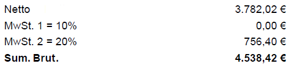
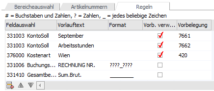
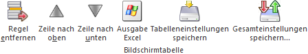

In der Tabelle "Regeln" können spezifische Regeln für das Füllen der Buchungs- bzw. Belegvariablen hinterlegt werden, falls unsere programminterne Logik beispielsweise den Gesamtwert einer speziellen Rechnung nicht automatisch erkennen sollte.
Beispiel
Endbeträge der Rechnung:

Definierte Regel: (331410 für den Gesamtbetrag)

Ø Feldauswahl
Hier stehen alle Buchungs- bzw. Belegvariablen zur Auswahl, welche anhand der Regel befüllt werden können.
Ø Vorlauftext
Im Vorlauftext muss der Text bzw. Wert eingeben werden, welcher vor dem Wert steht, welcher in die Variable befüllt werden soll. (Siehe Beispiel)
Ø Maskierung
In der Maskierung muss anschließend der zu übernehmende Wert bzw. seine Definition bestimmt werden, die sozusagen als Ersatzzeichen gelten.
# = Buchstaben und Zahlen (Es werden Zahlen und Buchstaben übernommen)
? = Zahlen (Es werden nur Zahlen übernommen)
_ = jedes beliebige Zeichen (Es wird alles übernommen)
Wenn eine Maskierung mit fünf Unterstrichen definiert wird, werden die nächsten fünf Werte, unabhängig davon, ob es eine Zahl oder Buchstabe ist, in das definierte Feld übernommen, wenn der hinterlegte Vorlauftext zutrifft.
Ø Vorbelegung verwenden
Wenn ein Wert bei einer Variable vorbelegt werden soll, wenn ein bestimmtes Wort am Beleg (lt. Vorlauftext) gefunden wurde, dann muss diese Checkbox aktiviert werden und die Vorbelegung im Feld "Vorbelegung" hinterlegt werden.
Beispiel 1
Wenn das Wort "Honorarnote" am Beleg vorkommt, dann soll das KontoSoll automatisch mit dem Konto 7661 vorbelegt werden.
Regeldefinition
ü 331003 KontoSoll (Feldauswahl)
ü Honorarnote (Vorlauftext)
ü Checkbox aktiviert (Vorb. verwenden)
ü 7661 (Vorbelegung)
Beispiel 2
Wenn das Wort "Reinigung" am Beleg vorkommt, dann soll das KontoSoll automatisch mit dem Konto 7662 vorbelegt werden.
Regeldefinition
ü 331003 KontoSoll (Feldauswahl)
ü Reinigung (Vorlauftext)
ü Checkbox aktiviert (Vorb. verwenden)
ü 7662 (Vorbelegung)
Beispiel 3
Wenn das Wort "Wien" vorkommt, dann soll automatisch die Kostenart 420 vorbelegt werden.
Regeldefinition
ü 376000 Kostenart (Feldauswahl)
ü Wien (Vorlauftext)
ü Checkbox aktiviert (Vorb. verwenden)
ü 420 (Vorbelegung)
Ø Vorbelegung
Es kann auch eine Vorbelegung für dieses Feld anhand einer Regel definiert werden.
Tabellenbuttons

Ø Regel entfernen
Durch Auswahl dieses Buttons wird die markierte Regel gelöscht.
Ø Zeile nach oben / Zeile nach unten
Mit diesen Buttons können Regeln innerhalb der Tabelle verschoben werden.
Ø Ausgabe Excel
Durch Anwahl des Buttons "Ausgabe Excel" wird der Inhalt der Tabelle an Microsoft Excel übergeben.
Ø Tabelleneinstellungen speichern
Die Spalten einer Tabelle können grundsätzlich an beliebige Positionen verschoben, bzw. in der Breite entsprechend angepasst werden. Durch Anwahl des Buttons "Tabelleneinstellungen speichern" werden die Einstellungen benutzerspezifisch gespeichert und bei dem nächsten Aufruf des Programmpunktes wieder vorgeschlagen.
Ø Gesamteinstellungen speichern
Im Gegensatz zu "Tabelleneinstellungen speichern" können mit "Gesamteinstellungen speichern" mehrere Tabellenaufbauten gespeichert und nach Wunsch geladen werden. Zusätzlich werden Sonderfunktionen der Tabelle (z.B. "Spalte gruppieren") ebenfalls bei der Speicherung bedacht.